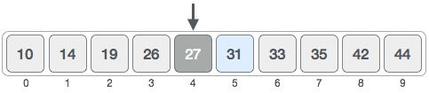
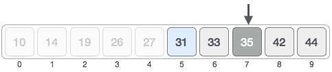
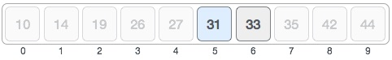

Binary search is a fast search algorithm with run-time complexity of Ο(log n). This search algorithm works on the principle of divide and conquer. For this algorithm to work properly the data collection should be in sorted form.
Binary search search a particular item by comparing the middle most item of the collection. If match occurs then index of item is returned. If middle item is greater than item then item is searched in sub-array to the right of the middle item other wise item is search in sub-array to the left of the middle item. This process continues on sub-array as well until the size of subarray reduces to zero.
For a binary search to work, it is mandatory for the target array to be sorted. We shall learn the process of binary search with an pictorial example. The below given is our sorted array and assume that we need to search location of value 31 using binary search.

First, we shall determine the half of the array by using this formula −
mid = low + (high - low) / 2
Here it is, 0 + (9 - 0 ) / 2 = 4 (integer value of 4.5). So 4 is the mid of array.
Now we compare the value stored at location 4, with the value being searched i.e. 31. We find that value at location 4 is 27, which is not a match. Because value is greater than 27 and we have a sorted array so we also know that target value must be in upper portion of the array.

We change our low to mid + 1 and find the new mid value again.
low = mid + 1 mid = low + (high - low) / 2
Our new mid is 7 now. We compare the value stored at location 7 with our target value 31.
The value stored at location 7 is not a match, rather it is less that what we are looking for. So the value must be in lower part from this location.
So we calculate the mid again. This time it is 5.

We compare the value stored ad location 5 with our target value. We find that it is a match.

We conclude that the target value 31 is stored at location 5.
Binary search halves the searchable items and thus reduces the count of comparisons to be made to very less numbers.
The pseudocode of binary search algorithm should look like this −
Procedure binary_search
A ← sorted array
n ← size of array
x ← value ot be searched
Set lowerBound = 1
Set upperBound = n
while x not found
if upperBound < lowerBound
EXIT: x does not exists.
set midPoint = lowerBound + ( upperBound - lowerBound ) / 2
if A[midPoint] < x
set lowerBound = midPoint + 1
if A[midPoint] > x
set upperBound = midPoint - 1
if A[midPoint] = x
EXIT: x found at location midPoint
end while
end procedure
To see binary search implementation using array in C programming language, please click here.